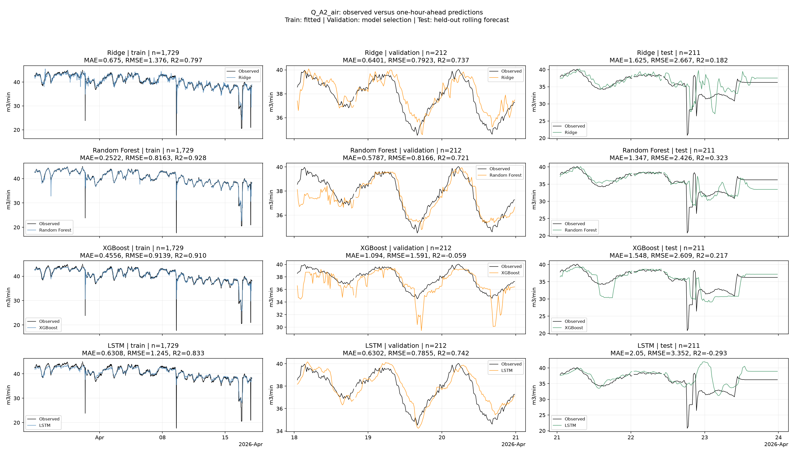
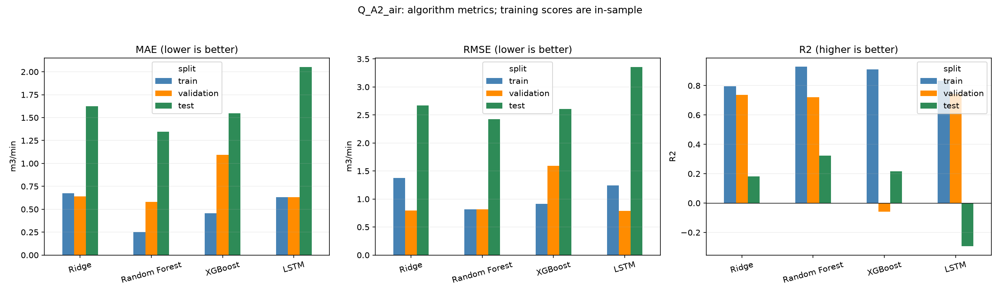

Train labels before 2026-04-18; validation labels before 2026-04-21; test origins from 2026-04-21. The split figure shows only the final seven days; training still uses all available earlier history. Test metrics never select models. R2 is undefined for constant labels. Recorded flows are predicted; this is not an operating recommendation.
| model | target | unit | algorithm | split | n | MAE | RMSE | R2 | constant_target |
|---|---|---|---|---|---|---|---|---|---|
| a2_air_flow | Q_A2_air | m3/min | Ridge | train | 1729 | 0.675048 | 1.375812 | 0.796770 | False |
| a2_air_flow | Q_A2_air | m3/min | Ridge | validation | 212 | 0.640139 | 0.792278 | 0.737417 | False |
| a2_air_flow | Q_A2_air | m3/min | Ridge | test | 211 | 1.624938 | 2.666906 | 0.181606 | False |
| a2_air_flow | Q_A2_air | m3/min | Random Forest | train | 1729 | 0.252243 | 0.816340 | 0.928450 | False |
| a2_air_flow | Q_A2_air | m3/min | Random Forest | validation | 212 | 0.578747 | 0.816577 | 0.721063 | False |
| a2_air_flow | Q_A2_air | m3/min | Random Forest | test | 211 | 1.347319 | 2.426060 | 0.322748 | False |
| a2_air_flow | Q_A2_air | m3/min | XGBoost | train | 1729 | 0.455631 | 0.913898 | 0.910327 | False |
| a2_air_flow | Q_A2_air | m3/min | XGBoost | validation | 212 | 1.093752 | 1.590857 | -0.058704 | False |
| a2_air_flow | Q_A2_air | m3/min | XGBoost | test | 211 | 1.548305 | 2.608962 | 0.216782 | False |
| a2_air_flow | Q_A2_air | m3/min | LSTM | train | 1729 | 0.630768 | 1.245448 | 0.833459 | False |
| a2_air_flow | Q_A2_air | m3/min | LSTM | validation | 212 | 0.630216 | 0.785479 | 0.741904 | False |
| a2_air_flow | Q_A2_air | m3/min | LSTM | test | 211 | 2.050190 | 3.352191 | -0.293019 | False |


